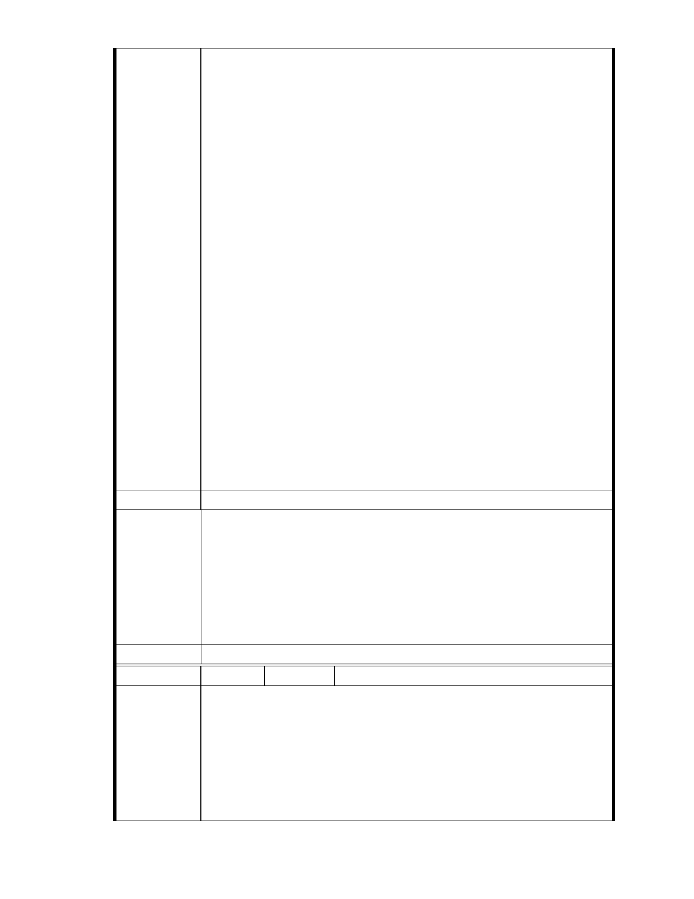

93.符子華
請為內湖區著想
94.鄧起慶
環境真的不能再被破壞了
95.余世華
保護「保護區」
96.陳姿伶 POLLY
慈濟要做好事，不要做惡事，慈濟你們拿的是社會大眾的錢，不要造成
災難，再來救災
97.請保留台北內湖的一塊肺！我相信這樣的破壞生態，是上人也不願見
到的！請放下這些名利，因為，我們要「真真實實」可以滋養生活的土
地！
98.李憶琦 LEE YI CHI
保護區就是需要保護的地區 慈濟要帶頭破壞嗎
99.陳啟勳 Chuck Chen
反對內湖保護區變更開發
環境保護亦是公共利益的一環
建議辦法
一、本案申請範圍於慈濟購得前已遭填平破壞作汽車停車場使用，已長
年不具保護區之功能；目前申請方案較先前方案已大幅降低開發強
度、調整使用項目並承諾大面積滯洪設施等回饋事項，顯示申請單
市府說明
位欲改善現況之誠意。
二、相關陳情意見將納入本案審查人民意見，依法定程序辦理。
三、後續審理程序將要求申請人加強與在地區民、社會大眾，就基地現
況、規劃方案及環境助益作為等方面加強溝通。
委 員 會 決 議 同編號 1。
編號
陳情理由
138 陳情人 陳乃立（MA201211020109）
主旨：
有關「變更臺北市內湖區成功路五段大湖公園北側部分保護區及道路用
地為社會福利特定專用區主要計畫案」，因慈濟全國所有社會福利設施用
地不虞匱乏，毫無欠缺此一用地之需求，且該基地位於山坡谷地集水敏
感區，附近居民防洪、排水、避難…，又非要依賴該用地滯洪避災，實
不宜變更山坡地「溜」地目保護區作為社會福利特定專用區，以免妨礙
都市排水與蓄洪防災功能，敬請查照。
- 162 -